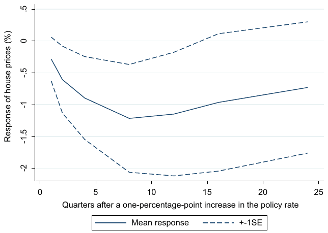
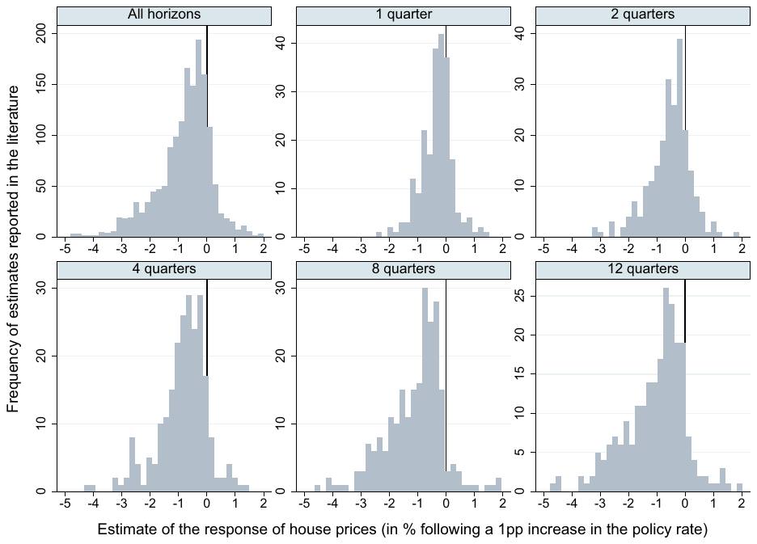
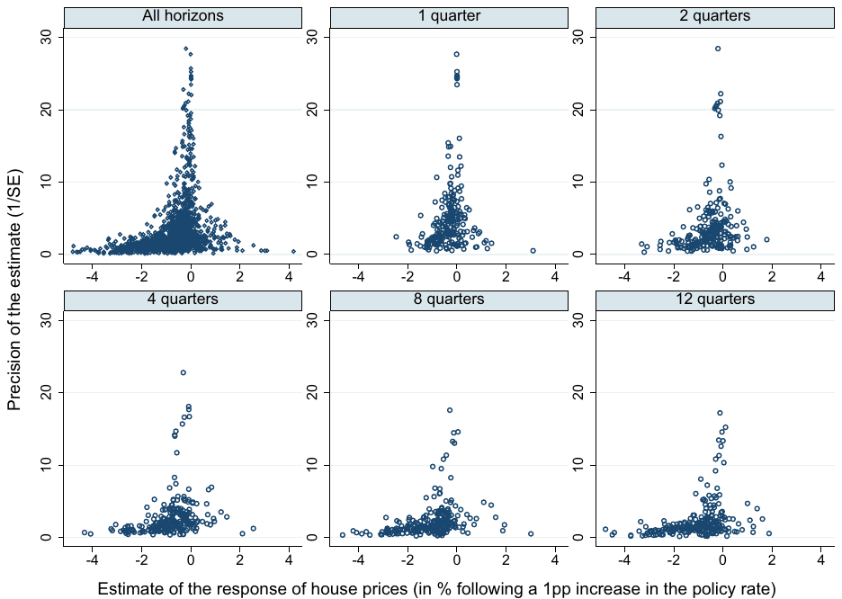
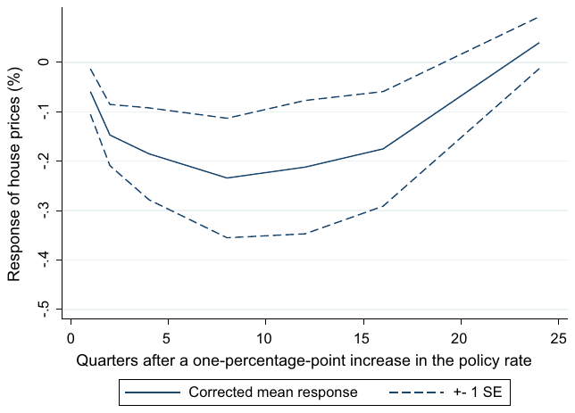
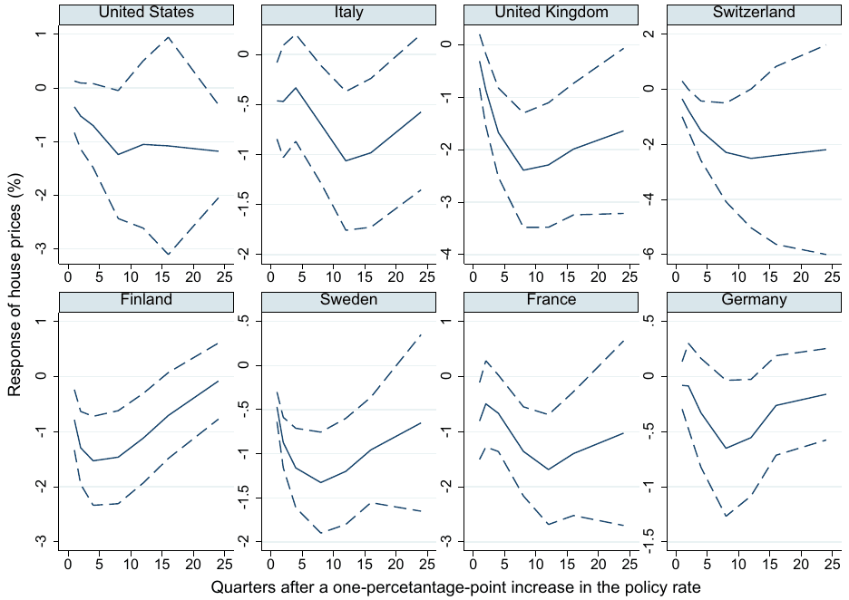
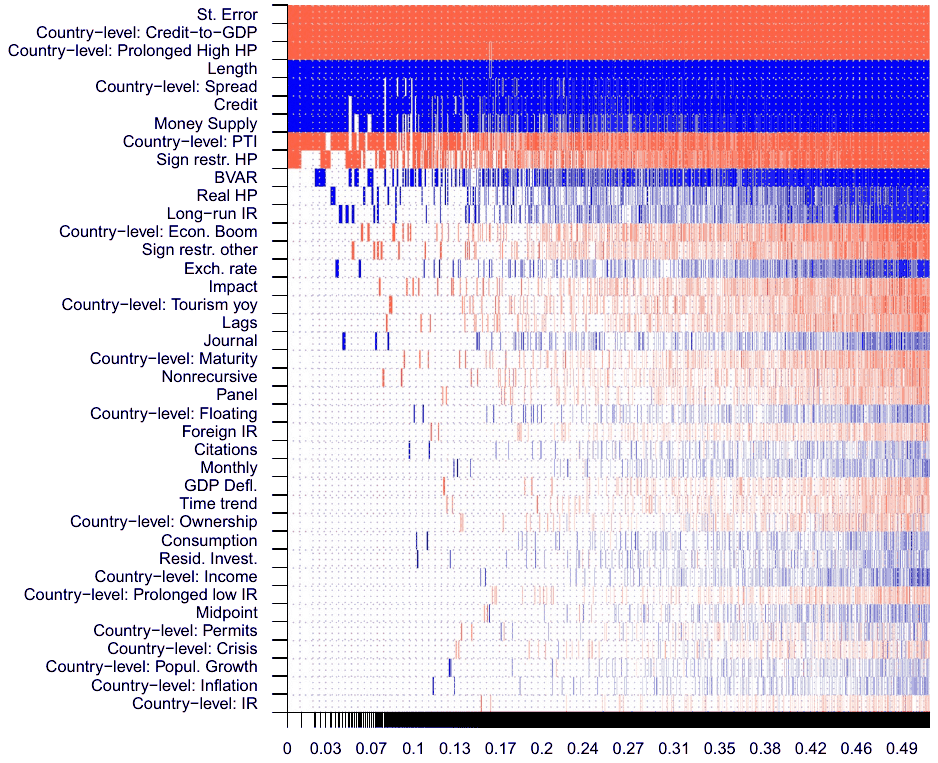
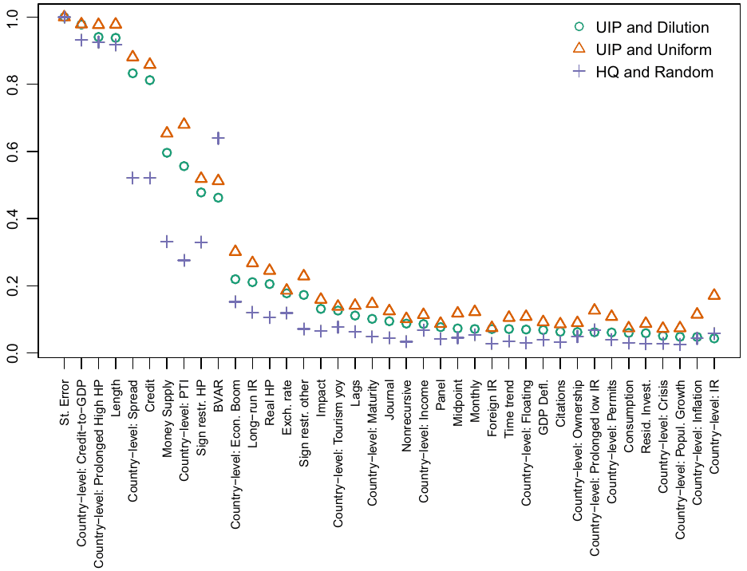
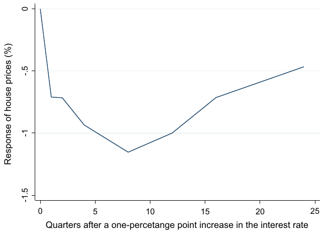
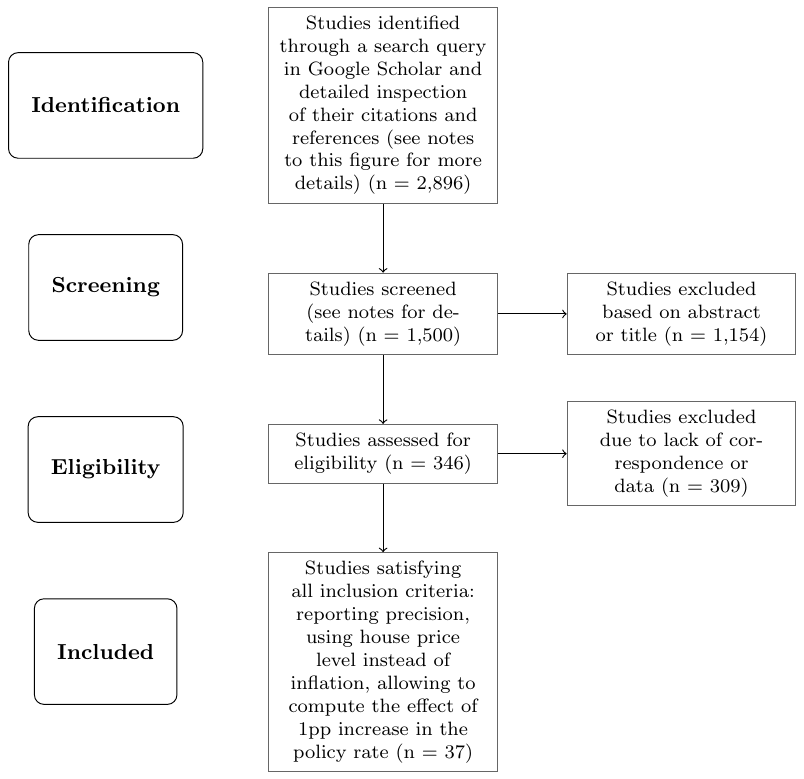

Dominika Ehrenbergerova, Josef Bajzik, Tomas Havranek (2023), "When Does Monetary Policy Sway House Prices? A Meta-Analysis." IMF Economic Review 71, 538-573. https://doi.org/10.1057/s41308-022-00185-5.
Dominika Ehrenbergerova1,2 · Josef Bajzik1,2 · Tomas Havranek2,3
1 Czech National Bank, Na Prikope 28, 115 03 Prague, Czech Republic
2 Institute of Economic Studies, Faculty of Social Sciences, Charles University, Opletalova 26, 110 00 Prague, Czech Republic
3 CEPR, London, United Kingdom
An online appendix with data and code is available at http://meta-analysis.cz/house_prices The opinions expressed here are ours and not necessarily those of the Czech National Bank.
Abstract
Several central banks have leaned against the wind in the housing market by increasing the policy rate preemptively to prevent a bubble. Yet the empirical literature provides mixed results on the impact of short-term interest rates on house prices: the estimated semi-elasticities range from −12 to positive values. To assign a pattern to these differences, we collect 1,555 estimates from 37 individual studies that cover 45 countries and 72 years. We then relate the estimates to 39 characteristics of the financial system, business cycle, and estimation approach. Our main results are threefold. First, the mean reported estimate is exaggerated by publication bias, because insignificant results are underreported. Second, inclusion of controls correlated with policy rates (credit or money supply) decreases the estimated effects of policy rates on house prices. Third, the effects are stronger in countries with more developed mortgage markets and generally later in the cycle when the yield curve is flat and house prices enter an upward spiral.
Keywords: Interest rates, House prices, Monetary policy transmission, Meta-analysis, Publication bias, Bayesian model averaging
JEL Classification C83 · E52 · R21
1 Introduction
Common wisdom has it that monetary policy is largely responsible for asset bubbles, including the rising house prices. That view sometimes translates into policy, such as in the case of the Swedish Riksbank between 2010 and 2014 or the government of New Zealand in 2021. In the most famous example of leaning against the wind, the Riksbank increased its policy rate from near zero to 2% in order to tame household indebtedness and house prices, even at substantial costs in terms of inflation and unemployment (Svensson 2014, 2017). The government of New Zealand, in turn, recently amended the mandate of the Reserve Bank of New Zealand and instructed it to consider house prices when making monetary policy decisions (Powell and Wessel 2021). The policy change in New Zealand is interesting both because its Reserve Bank has been an influential pioneer of innovations in central banking (introducing inflation targeting in 1990) and because by 2021 a large amount of research has amassed on the effects of monetary policy on house prices. This recent research, however, is rarely cited in the policy debate, which remains influenced by the arguments of Taylor (2007) in favor of the effectiveness of short-term rates in taming bubbles.1 Perhaps one of the reasons for the relatively limited impact of the recent research is the variance in results. The literature lacks a synthesis that would assign a pattern to the different conclusions. That is what we attempt to provide in this paper.
Figure 1 shows the mean response of house prices to a one-percentage-point increase in the short-term monetary policy rate. The mean is extracted from 237 impulse responses reported in 37 studies. The impulse responses, computed from vector autoregressions (VARs, Sims 1980), are the main output of these studies.

Hence our meta-analysis is unusual in that we collect and examine graphical results: the exact numerical results are rarely reported. For selected time horizons after the monetary policy shock we measure pixel coordinates and collect the estimated response of house prices. Meta-analyses of graphical results are rare, and a prominent recent example is the meticulous survey by Fabo et al. (2021) on the effects of quantitative easing. Note that Fig. 1 shows the corresponding 68% confidence interval (one standard error on both sides of the mean), which is the norm in the VAR literature. (Few impulse responses would be statistically significant at the 5% level common in most other fields of economics.) The impulse response bottoms out after two years at a 1.2% decrease in house prices following a one-percentage-point increase in the policy rate. We will call this effect, here 1.2, a semi-elasticity. It is clear that, on average, with such a small semi-elasticity central banks cannot plausibly combat double-digit inflation in house prices. The implication echoes Williams (2016), a concise narrative survey of 10 earlier papers on the topic.
But a mean figure conceals important differences in the context in which the impulse response is estimated. Perhaps in some countries and certain phases of the business cycle, leaning against the wind can help moderate the increase in house prices (and, vice versa, a loose policy may help reflate depressed housing markets). Calza et al. (2013) suggest that the transmission of monetary policy to house prices is stronger in countries with larger flexibility and development of mortgage markets. Similarly, Iacoviello and Minetti (2003) show that financial liberalization can be important for the strength of transmission. Assenmacher-Wesche and Gerlach (2010) examine whether transmission differs between boom and standard periods. Or perhaps the small mean response is contaminated by measurement problems, such as simple recursive identification (a problem stressed, for example, by Bjørnland and Jacobsen 2010) and omission of important variables, such as credit (Assenmacher-Wesche and Gerlach 2010). Our comparative advantage to the studies mentioned above is the richness of the meta-analysis dataset. No previous study in this literature has used data for more than 19 countries, which has made it difficult to investigate cross-country differences. Few cross-country studies examine more than a couple of business cycles. Similarly, comparisons of results with different identification of VAR models within individual studies have so far lacked statistical power. The work of the researchers who have collectively produced 237 impulse responses for various contexts allows us to examine the heterogeneity in transmission systematically.
Another problem with the mean impulse response is potential publication bias (Stanley 2001),2 which stems from the selective reporting of results that have the intuitive sign or are statistically significant. Vector autoregressions are complex models with (at least in this literature) typically few degrees of freedom. It follows that the resulting impulse response is sometimes counterintuitive: for example, it can show that house prices do not react to policy rates, or even more puzzlingly that house prices rise following a monetary tightening. If researchers take such results as evidence that their model is misspecified, they can try to run different specifications until they obtain the desired outcome. The problem is that while the puzzling impulse responses can indeed arise because of misspecifications, they can also appear simply by chance, especially given the small datasets in the literature. Seemingly large estimated effects of monetary policy in the right direction can also be due to misspecifications or chance, but it is difficult to identify them. Zero is a clear psychological cutoff that is not mirrored by a corresponding upper threshold and thereby causes a bias towards larger effects. The resulting publication bias can only be corrected using meta-analysis techniques.
Publication bias does not imply cheating and is inevitable in observational empirical research even if all researchers are honest. (In experimental research the bias can potentially be tackled by the preregistration of experiments, see, for example, Olken 2015, but preregistration is difficult when data are publicly available, so that the researcher can inspect them before preregistration). Publication selection can even improve the results of individual studies. The underlying effect of policy rate hikes on house prices will most likely be negative in most if not all contexts, so it is likely that the "wrong" sign indeed suggests to a researcher a problem with specification, sample size, or both. Thus it will improve the conclusions of an individual study when it does not focus on positive or zero responses of house prices. The idea of sign restrictions in vector autoregressions, eloquently advocated by Uhlig (2005), builds on a related principle. Unfortunately, under selective reporting the literature becomes biased as a whole since large estimates, also given by chance or misspecifications, are rarely omitted. So with individual studies we never know how much they suffer from publication bias.
For the basic identification of publication bias correction techniques we use the analogy suggested by McCloskey and Ziliak (2019), who compare publication selection to the Lombard effect in psychoacoustics: speakers involuntarily increase their vocal effort with increasing background noise. Similarly, given the example in the previous paragraph, many researchers will try harder to change the specification of their vector autoregression model if they have small samples and thus a lot of noise in estimation, a noise that often leads to insignificant initial estimates. With sufficient effort, the VAR model can be adjusted in a way that produces point estimates large enough to outweigh the large standard errors and thus delivers statistical significance. Therefore, selective reporting creates a correlation between estimates and standard errors, a correlation that otherwise should not appear in the literature. Aside from linear tests based on the Lombard effect (regressions of estimates on standard errors) we also employ recently developed nonlinear techniques by Andrews and Kasy (2019), Furukawa (2021), and van Aert and van Assen (2021). The latter technique, p-uniform*, relaxes the assumption of no correlation between estimates and standard errors in the absence of publication bias; the assumption is perhaps too strong for the VAR literature where the impulse responses are nonlinear combinations of underlying (unreported) regression coefficients. All techniques agree that the exaggeration due to publication bias is at least twofold.
In the second part of the analysis we relate the estimated impulse responses to the context in which they were obtained. To this end we collect 39 variables that reflect the characteristics of data (e.g. time coverage), specification (e.g. inclusion of long-term interest rates), estimation (e.g. nonrecursive identification), publication (e.g. the number of citations per year), and countries (e.g. the mean share of mortgages with a floating rate in the period for which the impulse response was estimated). To tackle model uncertainty in relating the estimated semi-elasticities to the 39 explanatory variables we employ Bayesian (Raftery et al. 1997; Eicher et al. 2011; Steel 2020) and frequentist (Hansen 2007; Amini and Parmeter 2012) model averaging. We address collinearity by using the dilution prior (George 2010). The finding of substantial publication bias is robust to controlling for heterogeneity. Regarding data characteristics, our results suggest that studies covering shorter time series tend to produce stronger responses of house prices to monetary shocks (that is, larger semi-elasticities in the absolute value), which is consistent with a small-sample bias. Regarding specification characteristics, we find that the omission of variables related to liquidity (credit or money supply) is associated with stronger responses of house prices to changes in the policy rate. The effect is substantial and can strengthen the reported semi-elasticity by one percentage point. In contrast, we find little evidence that estimation and publication characteristics help explain the heterogeneity observed in the literature.
The factors most useful in explaining the differences in impulse responses are variables reflecting structural heterogeneity: the characteristics of the countries and periods for which the impulse responses were produced. Three variables are especially important. First, it is the degree of development of the mortgage market (and credit markets in general). With larger credit markets in relation to GDP, the transmission of monetary policy to house prices gets stronger. Second, it is the slope of the yield curve. With flatter yield curves, the reported semi-elasticities are larger in the absolute value. Third, it is the period of a prolonged rise in house prices: when house prices have increased for several years, monetary policy becomes more potent at taming them. These country- and time-level characteristics can alter the implied impulse response by up to three percentage points. Therefore while on average house prices do not respond much to monetary policy, policy rates can help alleviate the build-up of housing bubbles in countries with developed mortgage markets during the latter part of the business cycle. Such alleviation is nevertheless costly in terms of inflation and unemployment, because even the most optimistic estimates implied by our analysis for outlying countries and time periods suggests that, after correction for publication bias, a one-percentage-point increase in the policy rate is associated with a maximum decrease in house prices of less than 3%.
2 The Semi-Elasticity Dataset
We collect estimates of the effect of changes in the policy rate on house prices. In general, these estimates are produced in the modern literature by two types of models: dynamic stochastic general equilibrium (DSGE) models and vector autoregression (VAR) models. The results of both can be interpreted as empirical estimates, though always conditional on theoretical considerations. DSGE models need to be calibrated (or their priors set), and of course their structure is entirely based on theory. The identification of VAR models, in turn, often has theoretical foundations as well, but in some cases only as an afterthought. Compared to DSGE, VAR models are generally more data-driven, and the corresponding estimates are thus better suited for meta-analysis methods. Moreover, DSGE estimates of the semi-elasticity are relatively rare (a prominent example being Iacoviello and Neri 2010).3 To avoid comparing apples and oranges, we focus on VAR estimates only. A general structural VAR model has the following form:
where is a vector of endogenous variables (including policy rates and house prices) for time and country , is a constant, and are distributed lag polynomials, is a vector of exogenous variables, and is an error term. The set of endogenous variables in a relevant VAR model usually includes output in addition to short-term rates and house prices. Depending on model specification, it may also include other variables, such the exchange rate, consumption, money supply, long-term interest rates, residential investment, and credit. In order to estimate Eq. (1), researchers rewrite it in reduced form. The principal outputs from VAR models, the reactions of the endogenous variables to structural shocks, are usually reported graphically as impulse response functions, which are easy for the reader to interpret and which cover the response over several time horizons.
To search for relevant studies we use Google Scholar because of its broad coverage and full-text capabilities. (More details on our search strategy, including the exact query, are available in Appendix 1.) We calibrate our search query in order to obtain the best known studies among the first hits. We inspect the first 500 papers produced by the search. Following Fabo et al. (2021), we also inspect the references and citations of the studies identified by the baseline search. Each study needs to fulfill the following three criteria: First, for quantitative comparability the study must use a VAR model that includes house prices (not house price inflation); we thus cannot use a few influential studies such as Fratantoni and Schuh (2003) and Del Negro and Otrok (2007).4 Second, monetary policy stance must be proxied by the short-term interest rate. Third, the study must report confidence intervals around the impulse response function so that we can recover the precision of the estimate, which is essential for tests of publication bias. These criteria leave a total of 37 studies, both published articles and working papers (all written in English), which collectively use unbalanced data from 45 countries between 1947 and 2018. We add the last study in April 2022. The list of included studies is available in Table 4 in Appendix 1.
From these 37 studies we collect the responses of house prices to a change in the policy rate after one, two, four, eight, twelve, sixteen, and twenty-four quarters. In each case we measure pixel coordinates using WebPlotDigitizer to recover the numerical estimate as precisely as possible. The extracted values are checked for consistency with authors' verbal assessment of their own findings. In the online appendix we provide an archive of all impulse responses together with the extracted numerical values. We gather 222 and 227 responses after one and two quarters, respectively, and label these as short-term effects. To capture mid-term effects we gather 237 estimates for both the four- and eight-quarter horizons. To capture long-term effects we collect 232 estimates for the twelve-quarter horizon, 226 estimates for the sixteen-quarter horizon, and 174 estimates for the twenty-four-quarter horizon. Because many studies do not report responses at the latter horizon, in the analysis we focus on horizons up to sixteen quarters, and in particular the mid-term effects (four and eight quarters) most relevant to monetary policy. In a few cases, the responses for the short-term effects (one and two quarters) are not reported as the corresponding impulse responses start at the four-quarter horizon. For each impulse response we standardize the effects so that they correspond to a percentage response of house prices to a one-percentage-point increase in the policy rate. We compute the standard error from the reported confidence intervals; in the few cases when the confidence intervals are asymmetrical, we approximate the standard errors by taking the average of both bounds.
We have already commented on the mean impulse response function, Fig. 1, in the Introduction. A closer view of the distribution of semi-elasticities at different horizons is provided in Fig. 2. At the one-quarter horizon, most of the estimates are close to zero, and the distribution is almost symmetrical. With an increasing horizon, the mass of the estimates moves to the left, and the distribution becomes asymmetrical. Note that very few estimates suggest a large response of house prices to changes in the policy rate. A couple of outliers are cut from the figure for ease of exposition (the largest one being −12%), but these are isolated cases. In total for all the horizons, 87% of all the semi-elasticities lie between −2% and 1%. Moreover, more than 50% of all the semi-elasticities lie between −1% and 0%.
In addition to the impulse response functions, we also collect 39 control variables that capture the specifics of each study in order to examine the heterogeneity in the estimates. Slightly fewer than two thirds of the variables included are collected from primary studies themselves, while the remaining third consist of external country-level variables included to examine structural heterogeneity and collected from the World Bank, OECD, and Eurostat. In accordance with the latest meta-analysis reporting guidelines (Havranek et al. 2020), the data taken from individual studies (estimates, confidence intervals, and variables reflecting estimation context) were collected by two co-authors of this paper and cross-checked to eliminate potential mistakes arising from manual collection. These variables are discussed in more detail in Sect. 4, which focuses on the heterogeneity in the literature. In the next section we focus on publication bias, which can distort the reported semi-elasticities shown in Figs. 1 and 2.
3 Publication Bias
Publication bias is the systematic difference between the distribution of results produced by researchers and the distribution of results reported by researchers (both in working papers and journal articles). Sometimes the bias or its specific forms are

also called selective reporting or p-hacking, though we prefer to work with the former, more general term. Whether or not publication bias is universally harmful is still a controversial question. On the one hand, it makes little sense to build a paper on unlikely results, such as those that suggest a rise in house prices following a monetary policy tightening.5 On the other hand, if such unlikely results are ignored, the literature as a whole gets biased upwards because it is hard to spot large estimates with the right sign and significance that are also due to chance or misspecifications. The resulting tension between the effects of publication selection at the micro and macro level is in the context of vector autoregressions nicely illustrated by the following quote due to Uhlig (2012: p. 38, emphasis added):
At a Carnegie-Rochester conference a few years back, Ben Bernanke presented an empirical paper, in which the conclusions nicely lined up with a priori reasoning about monetary policy. Christopher Sims then asked him, whether he would have presented the results, had they turned out to be at odds instead. His half-joking reply was, that he presumably would not have been invited if that had been so. There indeed is the danger (or is it a valuable principle?) that a priori economic theoretical biases filter the empirical evidence that can be brought to the table in the first place.
In experimental research, publication bias can in principle be tamed by preregistration (Olken 2015; Strømland 2019), and the American Economic Association has established a registry for experimental papers explicitly to “counter publication bias” (Siegfried 2012: p. 648). Such registries are also common in medical research, where publication bias has long been recognized as a grave problem (Nosek et al. 2018), but we are not aware of a field in which publication bias would be extirpated by preregistration. Perhaps publication bias is allowed to survive in many fields because at the micro level of individual studies it can really represent a valuable principle, a specification check that clearly tells the researcher that something is wrong with the model or the data. It is then the task for those who evaluate the literature as a whole to correct for the macro publication bias. As we have noted in the Introduction, our basic identification procedure is based on the Lombard effect. If estimation is imprecise and data are noisy, the researcher will need to try harder to produce estimates that are fully consistent with the intuition and theory—that is, statistically significant negative responses of house prices to a monetary tightening. So we expect more precise estimates to be less biased.
The logic of the identification assumption can be described in a so-called funnel plot often used in medical research. The funnel plot is a scatter plot of estimate size (on the horizontal axis) and estimate precision (on the vertical axis). The most precise estimates will be close to the underlying mean effect, while less precise estimates will be more dispersed, together forming the shape of an inverted funnel. If the mean underlying effect is not zero, the most precise estimates will always be statistically significant and therefore reported. In the absence of publication bias all imprecise estimates will be reported with the same probability. If publication bias is present and the literature as a whole prefers significant negative responses of house prices to a monetary tightening, then given the same precision positive (and small negative) estimates will be reported with a lower probability than large negative estimates, because the latter are more likely to be statistically significant. The funnel plots reported in Fig. 3 show signs of asymmetry consistent with publication bias. It is interesting to observe that the degree of asymmetry increases as the horizon of the impulse response increases, perhaps reflecting the fact that insignificant estimates are less acceptable at longer horizons.

The asymmetry of the funnel can be tested explicitly (Card and Krueger 1995; Egger et al. 1997):
where denotes the i-th estimated effect of interest rates on house prices in the j-th study, and SE is the corresponding standard error. Parameter denotes the mean effect beyond bias (that is, conditional on infinite precision and thus no publication selection), while represents the intensity of publication bias. The simple regression has at least two problems (aside from ignoring heterogeneity, which we will address in the next section). First, it assumes a linear relationship between the standard error and the extent of publication bias. But the correlation between bias and precision can vary for different values of precision. When the estimate is very precise, small changes in precision do not alter the intensity of publication selection because they do not alter the designation of statistical significance at standard levels. When the estimate is very imprecise, small increases in precision do not achieve statistical significance and thus do not influence publication probability and selective reporting. It is for intermediate values of precision, and especially around the main threshold for statistical significance, that a relation between estimates and standard errors is more likely.
Second, Eq. (2) assumes that the standard error is exogenous. The assumption can be realistic in medical research where the standard error is basically given to the researcher (it is computed based on a straightforward formula of the number of observations), but in economics the computation of the standard error is a complex exercise. In any case the standard error is not given but can be influenced by the estimation approach; therefore publication bias can work through both point estimates and standard errors. A related problem is that the standard error itself is estimated, and thus Eq. (2) suffers from attenuation bias (Stanley 2005).
We relax the linearity assumption by employing the stem-based method by Furukawa (2021) and the selection model by Andrews and Kasy (2019). The stem-based method (alluding to the stem of the funnel plot, a portion that includes precise estimates) is a nonparametric approach that optimizes the trade-off between bias and variance. When only the most precise studies are used to compute the mean effect, little publication bias remains, but the variance of the mean estimate increases because it is inefficient to discard information. When less precise studies are included as well, the variance of the mean estimate decreases, but the mean is more contaminated by bias. Furukawa (2021) presents a straightforward way how to weigh these two problems and select the optimal number of most precise studies for the computation of the mean effect. The method rests on minimizing the mean squared error, which can be expressed as the sum of publication bias (squared) and variance; the necessary assumption is that the most precise study does not suffer from any publication bias but is still subject to sampling error. The selection model by Andrews and Kasy (2019) assumes that the probability of reporting for each estimate depends on its sign and statistical significance, with changes in probability at 0 and the main thresholds for statistical significance. The model then re-weights the estimates based on the computed reporting probabilities.
We relax the exogeneity assumption by employing the p-uniform∗ method by van Aert and van Assen (2021). The method does not assume anything about the relationship between estimates and standard errors but uses the statistical principle that the distribution of p-values should be uniform at the underlying mean effect size. Consequently, it recomputes p-values and searches for the mean value of the semi-elasticity that would be consistent with a uniform distribution of p-values. In addition, in the online appendix we use several techniques that are robust to the exogeneity assumption but do not provide estimates of the mean semi-elasticity corrected for publication bias; instead they test for the presence of bias (Gerber and Malhotra 2008; Elliott et al. 2022) or test the null hypothesis that the corrected effect is zero (Simonsohn et al. 2014).
The main results are shown in Table 1. Panel A reports the findings of linear models (the regression of estimates on standard errors), while Panel B focuses on nonlinear models. We employ double clustering of standard errors at the level of studies and countries. Because we only have 37 studies in our dataset, we additionally report confidence intervals based on wild bootstrap. In the first part of Panel A we run the regression specified in Eq. (2), while in the second part we run weighted least squares with weights proportional to the inverse variance of the reported estimates. The weighted specification corrects for the heteroskedasticity inherent in Eq. (2). In the case of the selection model and p-uniform∗ in Panel B we need to specify the relevant thresholds for statistical significance. As we have noted in the Introduction, it is common in the VAR literature to use the 68% confidence interval (that is, one standard error on both sides of the mean) instead of the 95% interval common elsewhere in economics. A few VAR studies use the 90% interval, so we set our thresholds for the corresponding values of the t-statistic at 1 and 1.645. Two observations emerge from the table. First, the corrected mean effect is always smaller than the simple mean. Second, the effect at the eight-quarter horizon is usually statistically significant even after correction for publication bias and ranges from −0.40 (selection model) to −0.10 (p-uniform∗). The presence of publication bias and significance of the mean effect corrected for publication bias is further supported by robustness checks presented in the online appendix that use the techniques of Gerber and Malhotra (2008), Simonsohn et al. (2014), and Elliott et al. (2022).
| Time after a monetary policy shock: | 1 quarter | 2 quarters | 4 quarters | 8 quarters | 12 quarters | 16 quarters |
|---|---|---|---|---|---|---|
| PANEL A: Linear models | ||||||
| Regression of reported estimates on their standard errors, ordinary least squares | ||||||
| Standard error (publication bias) | −0.815* | −1.117*** | −1.353*** | −1.160*** | −0.667** | −0.375* |
| (0.463) | (0.367) | (0.427) | (0.308) | (0.317) | (0.215) | |
| [−1.220, −0.015] | [−1.987, −0.351] | [−2.373, −0.410] | [−2.051, −0.150] | [−1.542, 0.009] | [−1.281, 0.163] | |
| Constant (corrected mean effect) | −0.014 | −0.020 | −0.015 | −0.233 | −0.501** | −0.560*** |
| (0.168) | (0.185) | (0.248) | (0.219) | (0.252) | (0.201) | |
| [−0.213, 0.145] | [−0.417, 0.479] | [−0.576, 0.739] | [−0.790, 0.444] | [−1.072, 0.154] | [−0.968, −0.039] | |
| Regression of reported estimates on their standard errors, weighted by inverse variance | ||||||
| Standard error (publication bias) | −0.705*** | −0.874*** | −1.092*** | −1.160*** | −0.964*** | −0.732*** |
| (0.179) | (0.147) | (0.203) | (0.204) | (0.234) | (0.199) | |
| [−1.228, −0.393] | [−1.207, −0.586] | [−1.555, −0.730] | [−1.629, −0.710] | [−1.534, −0.497] | [−1.343, −0.337] | |
| Constant (corrected mean effect) | −0.059 | −0.147** | −0.185** | −0.234* | −0.212 | −0.175 |
| (0.046) | (0.062) | (0.093) | (0.121) | (0.135) | (0.116) | |
| [−0.058, 0.014] | [−0.303, 0.081] | [−0.360, 0.130] | [−0.496, 0.044] | [−0.521, −0.030] | [−0.533, −0.010] | |
| PANEL B: Nonlinear models | ||||||
| Stem-based method (Furukawa 2021) | ||||||
| Corrected mean effect | −0.017 | −0.192*** | −0.318*** | −0.324* | −0.172 | −0.146** |
| (0.053) | (0.074) | (0.116) | (0.185) | (0.145) | (0.071) | |
| Selection model (Andrews and Kasy 2019) | ||||||
| Corrected mean effect, break at | −0.004*** | −0.155* | −0.361*** | −0.404** | −0.205 | −0.065 |
| (0.002) | (0.094) | (0.079) | (0.190) | (0.187) | (0.115) | |
| Corrected mean effect, break at | −0.023 | −0.008 | −0.213** | −0.149 | −0.182** | −0.030 |
| (0.027) | (0.234) | (0.130) | (0.194) | (0.110) | (0.114) |
| PANEL B: Nonlinear models | ||||||
|---|---|---|---|---|---|---|
| P-uniform∗ (van Aert and van Assen 2021) | ||||||
| Corrected mean effect, break at | −0.133*** | −0.121*** | −0.140*** | −0.134*** | −0.118*** | −0.095*** |
| Corrected mean effect, break at | −0.072*** | −0.091*** | −0.103*** | −0.098*** | −0.093*** | −0.075*** |
| Observations | 222 | 227 | 237 | 237 | 232 | 226 |
Notes: The mean uncorrected effect at the 8-quarter horizon was −1.2. Standard errors, clustered at the level of studies and countries, are depicted in round brackets; confidence intervals from wild bootstrap are in square brackets. The p-uniform∗ method reports p-values, which are all below 0.001 and thus not shown in the table. The selection model and p-uniform∗ require specifying the break corresponding to a publication selection rule. The wild bootstrap (Cameron et al. 2008) is implemented via the boottest package in Stata (Roodman et al. 2019). *, **, and *** denote significance at the 10%, 5%, and 1% level, respectively.
The weighted least squares specification yields estimates of the mean effect close to the median of those of all the techniques considered, and we use this specification to construct the implied impulse response corrected for publication bias. The response is shown in Fig. 4 and presents a similar shape to the one discussed earlier in relation to Fig. 1: house prices decrease swiftly following a monetary policy tightening, the effect peaks after two years and then dissipates. The main difference is the size of the response, which is now much smaller: −0.23% after two years compared to the simple uncorrected mean estimate of −1.2%. Publication bias thus has important quantitative implications for the estimated effectiveness of monetary policy in taming house prices. Nevertheless, the finding of publication bias, and the mean impulse response itself, may be contaminated by the differences in the context in which the estimates are obtained. In the next section we thus turn to the heterogeneity in the estimates.

4 Heterogeneity
The previous literature has hinted on the differences in the transmission of monetary policy to house prices depending on the context of countries, time periods, and estimation techniques (among others, Iacoviello and Minetti 2003; Assenmacher-Wesche and Gerlach 2010; Bjørnland and Jacobsen 2010; Calza et al. 2013). But these studies could compare only a few countries, a few business cycles, and a few models computed using different specifications. Based on the efforts of these researchers, we build a large database of not only the reported results but also the factors that might have influenced those results. We are thus able to examine the heterogeneity in the response of house prices to policy rate shocks with much more power than the individual studies in the literature.
Consider Fig. 5, which shows mean impulse responses reported for selected countries. While all the responses are intuitive and none shows the price puzzle, an increase in prices following a monetary policy tightening, the strength and speed of transmission varies greatly across countries. The maximum decrease in house prices following a one-percentage-point increase in the policy rate is −0.6% in Germany but −2.2% in the United Kingdom. In Finland house prices near their maximum response already after 2 quarters and dissipate quickly after two years, while the responses are persistent in Switzerland and the United States. The responses are quite precisely estimated for Finland and Germany, while transmission is uncertain in France, Switzerland, and the United States. In this section we try to explain these and other differences, together with evaluating the robustness of publication bias results to controlling for heterogeneity. Aside from variables that measure the characteristics of countries and the business cycle (what we call structural heterogeneity), we also control for the characteristics of data, specification, estimation, and publication. The definitions and summary statistics for all the variables are available in the online appendix; the variables are also briefly summarized below. For simplicity we focus on the four-quarter horizon, which is arguably the most relevant for monetary policy if the central bank intends to defuse a housing bubble in time (the results for the eight-quarter horizon are nevertheless similar).

4.1 Variables
4.1.1 Data Characteristics
We control for the characteristics of the data used in the primary studies. First, regarding data frequency, only around 11% of the estimates come from studies that use monthly data; the rest are based on quarterly data. Second, we control for whether simple time series (78% of all observations) or panel data are used in vector autoregressions. We are also interested in whether the strength of transmission changes over time, and we thus include the mean year of the dataset used. By doing so, we control for the potential change in transmission not accounted for by variables capturing structural heterogeneity, which will be described below. We also test whether the length of the sample used in the primary studies systematically affects the estimates.
4.1.2 Specification Characteristics
When assessing the effect of monetary policy on the overall price level, Rusnak et al. (2013) find that study design has a significant effect on the results. For instance, they find that including output gap as a measure of output or commodity prices besides overall prices systematically affects the results. In a similar way, we create dummies for additional endogenous variables included in VAR models estimating the transmission of monetary policy to house prices. We include a dummy equal to one if the GDP deflator is used instead of the usual consumer price index. Next, we include dummy variables that equal one if a measure of credit (usually real credit to the private sector or mortgage loans) is used (28% of cases), if the long-term interest rate is used (20% of cases), and if consumption, residential investment, the money supply, the exchange rate, and the foreign interest rate are included. We distinguish between nominal and real house prices, though nominal house prices are used in merely around 6% of the studies. We only include studies which use residential house prices, not commercial house prices, land prices, or rent prices. As far as the remaining aspects of the estimation specification are concerned, we control for the number of lags included in the VAR model. The number of lags affects the persistence of the impulse responses and can thus also affect the strength of transmission.
4.1.3 Estimation Characteristics
Another important dimension in which estimates differ is the estimation technique. The primary studies typically use a reduced-form VAR employing ordinary least squares or maximum likelihood, and they usually rely on recursive ordering as their identification scheme (76% of all estimates). We control for the use of sign restrictions. Since sign restrictions differ across papers (the restriction may not be imposed on all variables in the same direction), we distinguish between two cases that are important for the transmission to house prices. First, we include a dummy variable equal to one if sign restrictions are imposed on the house price variable, guaranteeing the expected sign. Second, we include a dummy if sign restrictions are imposed on any other variables, but not house prices. We then control for other types of nonrecursive identification (such as long-run restrictions) and, regarding the estimation procedure, we also create a dummy variable that equals one if a Bayesian VAR is estimated (around 15% of the estimates).
4.1.4 Publication Characteristics
While the variables introduced above can help us control for some aspects of study quality, other aspects will remain difficult to code or even observe. As additional proxies for quality, we include three publication characteristics. First, we control for the number of Google Scholar citations each study has received on average over the first three years after it appeared on Google Scholar for the first time. This way we take into account the long and variable publication lags in economics, where working papers might accumulate a significant amount of citations even prior to publication, and our chosen measure also accounts for the fact that per-year citations tend to decline as the paper gets older. We also include variables reflecting publication in a peer-reviewed journal and the RePEc discounted recursive impact factor of the outlet. We expect highly-cited studies published in peer-reviewed journals with a high impact factor to be of higher quality than other studies, ceteris paribus. A qualification is of course in order, because any potential correlation between the size of the estimates and the publication characteristics can be also due to publication bias and not necessarily due to genuine systematic effects of (unobserved) study quality on results. One must therefore be cautious with the interpretation of the results related to this group of variables.
4.1.5 Structural Heterogeneity
We include a wide range of external variables (marked with the prefix "Country-level"), that is, variables obtained outside the primary studies to cover relevant macroeconomic, financial, demographic, and housing supply factors. For each impulse response, we compute these variables as mean values of the time span used to deliver the particular impulse response for a given country or a group of countries (in which case we weight the individual country-level values by country GDP). First, we include a measure of economic development—disposable income per capita. We also include variables capturing boom and crisis periods. Second, we include interest rate variables, which we suspect may interact with the transmission to house prices. We control for the level of the short-term interest rate itself: transmission can be more complete at higher ("normal") monetary policy rates, while it can change at low interest rates because of excessive risk-taking by economic agents. On the other hand, very low interest rates or prolonged periods of very low interest rates may cause asymmetries in the transmission. In consequence, a prolonged period of low interest rates fueling credit and house price booms could be mirrored by a stronger reaction of house prices to monetary policy. Long-term interest rates (10-year government bond yields) are more relevant than the short-term rates for the transmission to house prices, and they are often driven by factors independent of the policy rate, such as demographics, inequality, savings glut, the relative price of capital, and amount of public investment (Rachel and Smith 2017). Due to collinearity concerns, we include the term premium (spread) instead the long-term rate per se.6 We also include the inflation rate in the country: as shown by Rusnak et al. (2013), periods of high inflation are often associated with a lower credibility of the central bank and thus weaker transmission.
Third, we control for the characteristics of the lending market by including the credit-to-GDP ratio in order to account for the level of indebtedness as well as for the level of financial development. The inclusion of the mortgage-to-GDP ratio yields similar results, but because the amount of mortgages is unavailable for several countries in our dataset, we use the credit-to-GDP ratio instead to increase the number of degrees of freedom available for our analysis. We also include a variable capturing the share of mortgage loans with floating interest rates: the higher the share of floating-rate mortgages, the stronger the immediate transmission to the overall mortgage interest rate, and possibly the stronger the transmission to house prices in general. For similar reasons we also control for the average maturity of mortgage loans in the country. Fourth, regarding demographic characteristics we account for population growth in the country. If population growth is high, transmission may be weaker as house prices are driven by demographics rather than being affected by monetary policy.
Fifth, we include several characteristics of the housing sector. In order to account for house supply factors, we include the number of building permits. A low number of building permits indicates restricted housing supply and potentially hampered transmission of monetary policy.7 We also cover the home ownership structure. We include a proxy for tourism as a demand factor rather than a housing supply one. The remaining variables capturing structural heterogeneity relate to house prices themselves. In particular, we include the standardized price-to-income ratio as a proxy for overvaluation of house prices. The price-to-income ratio, available from the OECD database, is measured as the nominal house price divided by nominal disposable income per capita and can be considered a measure of affordability. As another potential proxy to capture overvalued house prices we include a variable capturing the number of periods house price growth is above its long-term average.
4.2 Estimation
We intend to find out whether the variables introduced above are systematically related to the reported effects of monetary policy on house prices. The easiest way would be to regress the estimated semi-elasticities on all the variables. But because of the large number of variables (39), such an estimation would be inefficient because many of the variables will probably not belong in the best underlying model. In other words, we face substantial model uncertainty, which is coupled with collinearity. Both can be addressed by Bayesian model averaging (BMA) with a dilution prior. BMA runs many models with different combinations of the explanatory variables and then constructs a weighted average over these models with weights proportional to model fit and complexity. The dilution prior (George 2010) gives each model an additional weight proportional to the determinant of the correlation matrix, so that collinearity is penalized in the final output of Bayesian model averaging. BMA was pioneered in the social sciences by Raftery (1995) and Raftery et al. (1997) and recently used in meta-analysis, for example, by Havranek et al. (2018, 2018, 2018), Bajzik et al. (2020), Cazachevici et al. (2020), Havranek and Sokolova (2020), Zigraiova et al. (2021), Gechert et al. (2022), and Matousek et al. (2022). As a robustness check, we use a frequentist alternative (frequentist model averaging, FMA), which is based on Magnus et al. (2010) and Amini and Parmeter (2012).
BMA can potentially run regressions with all the possible combinations of variables. Such a computation would take several months, and we avoid it by using the Markov Chain Monte Carlo process and its Metropolis-Hastings algorithm (Zeugner and Feldkircher 2015), which goes through the most probable models. The posterior model probability then expresses the weight of each model. The estimated coefficients for every variable are weighted by the posterior model probability through all the models. For each variable we thus obtain a posterior inclusion probability (PIP), which denotes the sum of the posterior model probabilities of all the models in which the variable is included.
Concerning priors, in the baseline specification the unit information g-prior (UIP) recommended by Eicher et al. (2011) gives the prior the same weight as one observation of the data. It constitutes our benchmark setting, addressing the lack of prior knowledge regarding the parameter values. Moreover, the dilution prior addressing collinearity provides us with the benchmark model prior. Aside from the weight proportional to the determinant of the correlation matrix, all models have the same prior probability. As a robustness check of our baseline BMA results, we estimate BMA using alternative g-priors and model priors. We use a combination of the unit information g-prior and the uniform model prior and a combination of the Hannan-Quinn (HQ) g-prior and the random model prior (Fernandez et al. 2001; Ley and Steel 2009). As we have noted, we also use frequentist model averaging as an additional robustness check. In FMA we use Mallow's criterion for model averaging (Hansen 2007), and the covariate space is orthogonalized using the approach of Amini and Parmeter (2012).
4.3 Results
Figure 6 summarizes the results of Bayesian model averaging graphically. Columns denote individual regression models from the best ones on the left, and the variables are sorted by posterior inclusion probability in descending order. The horizontal axis denotes the cumulative posterior model probabilities; only the 10,000 best models are shown, which is why the cumulative probability does not run to 1. To ensure convergence we employ 3 million iterations and 1 million burn-ins. Blue color (darker in grayscale) means that the variable is included and the estimated sign is positive, i.e. transmission is weaker. Red color (lighter in grayscale) means that the variable is included and the estimated sign is negative, i.e. transmission is stronger. Blank cells denote exclusion of the variable. Eight variables are included in most of the best models, which means that these variables are effective in explaining the heterogeneity in the reported semi-elasticities: the standard error (a proxy for publication bias), credit to GDP (a proxy for financial development), prolonged growth in house prices and price-to-income ratio (proxies for the build-up of a housing bubble), length of the time series (a proxy for small-sample bias), the term premium (spread between short- and long-term rates, a proxy for risk-taking and position in the business cycle), and the inclusion of credit and money supply in the VAR (proxies for omitted variables, or alternatively variables introducing a masking problem because the effect of short-term rates on house prices may work through effects on liquidity). The remaining variables have posterior inclusion probabilities below 0.5, which means they are not important in explaining the differences in reported results.

The numerical results of Bayesian model averaging are reported in Table 2. The eight variables with posterior inclusion probabilities above 0.5 are shown in bold. The posterior means presented in the table measure the partial derivatives of the reported semi-elasticities with respect to the variables in question. Our results suggest that the finding of substantial publication bias is robust to controlling for heterogeneity. Not only that the variable proves to be important in BMA, but it also has the largest posterior inclusion probability and the estimated coefficient (posterior mean) is larger than that reported in the previous section. We conclude that our previous finding of publication bias was not driven by omitting factors associated with heterogeneity. Next, we find that studies using longer time series are likely to report evidence of weaker transmission from monetary policy decisions to house prices. The result is consistent with a small-sample bias towards more negative semi-elasticities.
We find that specification characteristics are important for the reported estimates of the semi-elasticity. When credit or money supply are omitted from the analysis, the reported response of house prices tends to be more negative. There are two possible interpretations of the result. First, studies that exclude credit or money supply may suffer from omitted-variable bias, because they ignore the effect that liquidity itself has on house prices. Second, studies that include credit or money supply may suffer from the masking problem, because changes in the short-run rate affect the liquidity variables, which may then appear in a VAR to affect house prices on their own, masking the true causal effect of the policy rate. We also find that studies which put a (negative) sign restriction on the response of house prices tend to find, on average, more negative effects (even though the PIP here is slightly below 0.5). That finding is intuitive because with sign restrictions the price puzzle is a priori impossible. Note that sign restrictions on the response of house prices are used only by 5% of the specifications in our sample, and the results (including those on publication bias) would not be affected by excluding these restricted estimates entirely from our analysis.
Finally, our results suggest that variables reflecting the country's financial system and position in the cycle are important in explaining the reported semi-elasticities. The credit-to-GDP ratio has a PIP of almost 1 and shows a negative correlation with the reported response of house prices. Note that the result would be similar if we used the mortgage-to-GDP ratio instead. We opt for the former because data on the amount of mortgages are not available for every country and period of our dataset, so using mortgages would mean throwing away data. We interpret the finding, in line with Calza et al. (2013), as evidence for stronger transmission in countries with more developed mortgage (and, in general, credit) markets.
| Category | Variable | PIP | Post. mean | Post. SD |
|---|---|---|---|---|
| Publication bias | SE | 1.000 | − 1.540 | 0.141 |
| Data characteristics | Monthly | 0.031 | 0.011 | 0.086 |
| Panel | 0.042 | − 0.006 | 0.045 | |
| Length | 0.982 | 1.661 | 0.456 | |
| Midpoint | 0.026 | 0.005 | 0.054 | |
| Specification characteristics | GDP Defl. | 0.031 | − 0.005 | 0.052 |
| Foreign IR | 0.033 | − 0.006 | 0.077 | |
| Credit | 0.868 | 0.415 | 0.218 | |
| Consumption | 0.030 | 0.002 | 0.029 | |
| Resid. Invest. | 0.029 | 0.003 | 0.043 | |
| Money Supply | 0.683 | 0.433 | 0.342 | |
| Exch. rate | 0.113 | 0.028 | 0.096 | |
| Long-run IR | 0.163 | 0.065 | 0.173 | |
| Real HP | 0.173 | 0.088 | 0.224 | |
| Lags | 0.073 | − 0.004 | 0.020 | |
| Time trend | 0.030 | − 0.003 | 0.032 | |
| Estimation characteristics | BVAR | 0.427 | 0.267 | 0.347 |
| Sign restr. HP | 0.491 | − 0.387 | 0.453 | |
| Sign restr. other | 0.124 | − 0.067 | 0.219 | |
| Nonrecursive | 0.052 | − 0.011 | 0.066 | |
| Publication characteristics | Citations | 0.032 | 0.001 | 0.015 |
| Impact | 0.095 | − 0.016 | 0.063 | |
| Journal | 0.068 | 0.014 | 0.065 | |
| Structural heterogeneity | Country-level: Crisis | 0.024 | 0.000 | 0.004 |
| Country-level: IR | 0.014 | − 0.001 | 0.011 | |
| Country-level: Prolonged low IR | 0.027 | − 0.001 | 0.005 | |
| Country-level: Spread | 0.901 | 0.444 | 0.211 | |
| Country-level: Floating | 0.039 | 0.000 | 0.001 | |
| Country-level: Tourism | 0.080 | − 0.001 | 0.006 | |
| Country-level: Income | 0.028 | 0.013 | 0.117 | |
| Country-level: Inflation | 0.020 | 0.001 | 0.010 | |
| Country-level: Credit-to-GDP | 0.998 | − 0.011 | 0.003 | |
| Country-level: Popul. Growth | 0.022 | 0.002 | 0.037 | |
| Country-level: PTI | 0.648 | − 0.015 | 0.013 | |
| Country-level: Prolonged High HP | 0.983 | − 0.108 | 0.028 | |
| Country-level: Permits | 0.024 | 0.000 | 0.001 | |
| Country-level: Maturity | 0.063 | − 0.022 | 0.115 | |
| Country-level: Ownership | 0.030 | 0.000 | 0.002 | |
| Country-level: Econ. Boom | 0.154 | − 0.007 | 0.019 | |
| Constant | 1.000 | − 1.553 | NA | |
| Observations | 225 |
Note: PIP posterior inclusion probability, SD standard deviation. Variables with a posterior inclusion probability higher than 0.5 are shown in bold. We employ the unit information g-prior as recommended by Eicher et al. (2011) and the dilution prior to address collinearity (George 2010). A detailed description of the variables is available in the online appendix.
Next, we find that a flatter yield curve and an ongoing build-up of a bubble in the housing market are both associated with stronger transmission. The result is consistent with monetary policy being more effective at influencing house prices at the latter part of the business cycle, when banks and households are more prone to excess optimism and risk-taking, and adds some credence to the policy of leaning against the wind. In the next subsection, however, we show that even under the best of circumstances the strength of transmission is insufficient to substantially mitigate housing bubbles. Moreover, as documented by Schularick et al. (2021), interest rate hikes during a house price boom can often lead to a financial crisis. A crisis precipitates a decrease in house prices, but the overall outcome is of course not what the policy maker had in mind. Unfortunately our dataset does not allow us to fully disentangle VAR evidence on the aforementioned mechanism from soft landings. We partially address this issue by including an interaction of the Crisis and Prolonged high HP variables (Figure C2 in the online appendix). The interaction is not important in BMA, which is in line with the interpretation that financial crises are not what drives our result that monetary policy becomes more effective at taming house prices after they have increased for several years.
As we have noted, we run several robustness checks to test the robustness of our results. Figure 7 shows the posterior inclusion probabilities for individual variables using different sets of priors in Bayesian model averaging. The changes are small and would not change our conclusions. In the online appendix we show the results of frequentist model averaging, Bayesian model averaging for all semi-elasticities (not just those at the four-quarter horizon), and ordinary least squares regressions for all horizons separately. The results of FMA are broadly consistent with those of BMA, though generally yield less significance (for example, the p-values associated with the variables reflecting the inclusion of credit is 0.2). On the other hand, BMA and OLS results for all semi-elasticities imply more significance for most variables compared to our baseline BMA for semi-elasticities at the four-quarter horizon. In all cases, the finding of publication bias is statistically significant at the 1% level (in frequentist techniques) or has a posterior inclusion probability of 1 (in Bayesian techniques).
4.4 Implied Response
As the bottom line of our analysis we compute the impulse response implied by the entire literature but conditional on the absence of publication bias and potential misspecifications. We construct both the mean impulse response for the typical country and also responses for individual countries. In general, our results can be used to derive an implied impulse response conditional on any selected aspect of the financial system, business cycle, and estimation techniques. Technically the implied responses are computed as fitted values using the results of Bayesian model averaging and a definition of the preferred values for each variable included in BMA (or the sample mean if no preference can be made). So we plug in zero for the standard error in order to condition the implied response on the correction for publication bias. While we have noted that the linear correction for publication bias using the exogeneity assumption for the standard error is problematic in theory, we have also shown in the previous section that in the literature on monetary transmission to house prices the linear correction gives results similar to more complex methods. Since it is implausible to use the more complex methods of publication bias correction in BMA, we rely on the linear regression.

In order to put more weight on studies that use recent data we employ sample maximum for the variable capturing the mean year of data. Regarding specification characteristics, we prefer if the study uses real house prices (instead of nominal). Considering the controls for the long-term interest rate, credit, and money supply, we have no preference: as we have noted, the inclusion of these variables may create a masking problem, but their exclusion may lead to omitted-variable bias. Regarding estimation characteristics, we prefer Bayesian techniques and nonrecursive identification (structural VAR or sign restrictions). Regarding publication characteristics, we prefer highly cited studies published in peer-reviewed journals with a high impact factor: so we plug in 1 for the dummy variable reflecting journal publication and sample maxima for the number of per-year citations and the RePEc discounted recursive impact factor of the journal. We leave all other variables, including variables capturing structural heterogeneity, at sample means—of course, in the case of impulse responses constructed for individual countries we set the structural variables to the values corresponding to the individual countries.
| Horizon of the corresponding impulse response: | 1Q | 2Q | 4Q | 8Q | 12Q | 16Q |
|---|---|---|---|---|---|---|
| Agnostic on control variables (baseline) | − 0.710 | − 0.716 | − 0.935 | − 1.154 | − 1.000 | − 0.714 |
| Control for credit, money supply, and long-run IR | − 0.016 | − 0.023 | − 0.241 | − 0.461 | − 0.306 | − 0.021 |
| Excluding credit, money supply, and long-run IR | − 0.920 | − 0.927 | − 1.145 | − 1.365 | − 1.210 | − 0.925 |
| Finland | − 0.576 | − 0.583 | − 0.801 | − 1.021 | − 0.866 | − 0.581 |
| France | − 1.477 | − 1.484 | − 1.702 | − 1.922 | − 1.767 | − 1.482 |
| Germany | − 0.497 | − 0.503 | − 0.722 | − 0.941 | − 0.787 | − 0.501 |
| Italy | 0.093 | 0.087 | − 0.132 | − 0.352 | − 0.197 | 0.088 |
| United Kingdom | − 1.344 | − 1.351 | − 1.569 | − 1.789 | − 1.634 | − 1.349 |
| United States | − 0.910 | − 0.916 | − 1.135 | − 1.354 | − 1.200 | − 0.914 |
The values represent the percentage response of house prices to a one-percentage-point increase in the policy rate. They correspond to mean estimates conditional on selected characteristics of the individual studies (see text for more details) and are computed based on fitted values from Bayesian model averaging (for example, by substituting “0” for the standard error, sample maximum for the number of citations, and so on). The estimates for individual countries are based on the baseline definition in the first row

The results are shown in Table 3 and Fig. 8. While the main analysis in this section is based on the four-quarter horizon for ease of exposition, in order to compute the implied impulse response we need to run BMA analyses for each horizon separately. The corresponding analyses are not reported here, but in Table C3 in the online appendix we present the concise results of OLS estimates for each horizon. For each horizon the implied semi-elasticity is computed using the approach described in the previous two paragraphs. Note that confidence intervals or other traditional measures of statistical significance cannot be constructed, because the implied estimates are derived from Bayesian model averaging. The first row of the table shows the baseline implied response, which is also depicted graphically in Fig. 8. The mean maximum corrected semi-elasticity is −1.2, which suggests, in practical terms, insufficiently strong transmission of monetary policy to house prices—on average at least.
The second row of Table 3 presents the results of the same exercise with the exception of the preferred values for specification characteristics. When one gives more weight to the omitted-variables interpretation and believes that liquidity and long-term interest rates should be controlled for in the VAR, the resulting semi-elasticity is much smaller in magnitude (−0.5 after two years). Next, we focus on the masking interpretation, according to which credit, money supply, and long-term rates should not be included in the VAR. The resulting responses of house prices are substantially larger with the semi-elasticity reaching −1.4 after eight quarters. Still the response is not large enough to be of practical importance in taming housing bubbles. It follows that different specification of the VAR model can easily change the estimated response of house prices by around one percentage point. In the remaining rows of Table 3 we compute impulse responses for several selected countries. Even the strongest semi-elasticity (−1.9 in France) is insufficient for plausible leaning against the wind when house prices inflation reaches double digits. The weakest semi-elasticity appears again in Italy (−0.4 after two years), which means that country-level characteristics can explain differences of up to 1.5 in the semi-elasticity. The differences explained by country and business-cycle characteristics can rise up to 3 if we select extreme values for these characteristics (not reported in the table). But even the impulse responses implied by the most extreme outliers in the values of these characteristics suggest semi-elasticities above −3.
5 Concluding Remarks
We collect 1,555 estimates of the reaction of house prices to a monetary policy shock at different horizons reported in 237 impulse responses from 37 studies. Our results suggest that a one-percentage-point increase in the policy rate is on average associated with a maximum decrease of 1.2% in house prices after two years. We find that transmission varies substantially across countries and time: it is stronger in countries with more developed mortgage markets and in the latter part of the business cycle. But even the most optimistic estimates for the periods and countries with characteristics conducive to more effective transmission imply semi-elasticities of less than 3 in absolute value. So while leaning against the wind may help partly mitigate housing bubbles, the policy rate is a crude instrument for such a task and one costly in terms of inflation and unemployment. Svensson (2017) compares the benefits and costs of leaning against the wind and comes to the conclusion that in most contexts costs outweigh benefits by a large margin. Targeted macroprudential policy tools in the form of binding loan-to-income or debt-service-to-income ratios appear more likely to succeed in steering house prices, although empirical evidence on their effectiveness is still relatively thin (Poghosyan 2020).
Three qualifications of our results are in order. First, in a way unusual but not unheard of in meta-analysis (Fabo et al. 2021), we collect data from graphical results (impulse responses and the corresponding confidence intervals). Even though we do our best to codify the numerical values as precisely as possible, a random classical measurement error inevitably arises. In a regression of the estimated semi-elasticity on the corresponding standard error, therefore, the slope coefficient is biased downward due to attenuation bias. Because in our benchmark models the slope coefficient measures the strength of publication bias, many of our estimations are likely to underestimate the effects of the bias and hence produce conservative corrections. In fact, however, the problem with measurement error is more benign in the synthesis of graphical results than in the traditional synthesis of numerical results. The reason is that numerical results are rounded. Because different studies round differently, measurement error might not be random across studies. Bruns et al. (2019) show that rounding can create a false impression of publication bias (for example, the clustering of t-statistics at integers such as 2).
Second, the baseline meta-analysis models that we use come from or are inspired by medical research. In medical research, it is common to assume that the standard error is given to the researcher, often directly proportional to the number of subjects. That is, the standard error is exogenous and in the absence of publication bias there should be no correlation between estimates and standard errors. But in economics the computation of the standard error forms an important part of the exercise: in the VAR literature, for example, the confidence intervals can be constructed using different bootstrapping approaches, and different estimation techniques will generally yield different intervals. It follows that publication bias can also work via unintentional manipulation of the reported precision, not only the reported point estimate as is commonly assumed in meta-analysis. One solution is to use a function of the number of observations as an instrument for the standard error, but in the VAR literature the instrument is weak. We thus employ the new p-uniform* technique (van Aert and van Assen 2021) developed in psychology, which uses the distribution of p-values and assumes nothing about the relationship between estimates and standard errors. As robustness checks we also use the techniques by Gerber and Malhotra (2008), Simonsohn et al. (2014), and Elliott et al. (2022) that too do not need the exogeneity assumption.
Third, in this meta-analysis we ignore the growing literature on the effects of unconventional monetary policy on house prices (see, for example, Rahal 2016; Lenza and Slacalek 2018; Rosenberg 2019). While the short-term policy rate appears to have only limited influence on house prices, other tools of monetary policy (such as quantitative easing) might have played a more prominent role recently. Indeed, our results indicate that controlling for liquidity reduces the reported effects of policy rates on house prices, which suggests that tools which primarily affect liquidity can be important. But the studies focusing on unconventional policy are quantitatively incomparable with the rest of our sample, and we believe they are best analyzed separately in a future research synthesis. The literature also lacks a thorough synthesis on the effects of macroprudential policies on house prices. As the body of relevant empirical research grows, conducting a meta-analysis will soon be possible in both realms.
Appendix
Details of Literature Search
See Fig. 9 and Table 4.

| Author | Title | Year |
|---|---|---|
| Iacoviello (2002) | House Prices and Business Cycles in Europe: a VAR Analysis | 2002 |
| Iacoviello and Minetti (2003) | Financial liberalization and the sensitivity of house prices to monetary policy: theory and evidence | 2003 |
| Giuliodori (2005) | Monetary Policy Shocks and the Role of House Prices Across European Countries | 2004 |
| Calza et al. (2007) | Mortgage markets, collateral constraints, and monetary policy: do institutional factors matter? | 2007 |
| Assenmacher-Wesche and Gerlach (2008a) | Financial structure and the impact of monetary policy on asset prices | 2008 |
| Assenmacher-Wesche and Gerlach (2008b) | Monetary policy, asset prices and macroeconomic conditions: a panel-VAR study | 2008 |
| Belke et al. (2008) | Sowing the seeds for the subprime crisis: does global liquidity matter for housing and other asset prices? | 2008 |
| Elbourne (2008) | The UK housing market and the monetary policy transmission mechanism: An SVAR approach | 2008 |
| Iacoviello and Minetti (2008) | The credit channel of monetary policy: Evidence from the housing market | 2008 |
| Jarocinski and Smets (2008) | House prices and the stance of monetary policy | 2008 |
| Vargas-Silva (2008) | Monetary policy and the US housing market: A VAR analysis imposing sign restrictions | 2008 |
| Assenmacher-Wesche and Gerlach (2009) | Financial structure and the impact of monetary policy on property prices | 2009 |
| Carstensen et al. (2009) | Monetary policy transmission and house prices: European cross-country evidence | 2009 |
| Assenmacher-Wesche and Gerlach (2010) | Monetary policy and financial imbalances: facts and fiction | 2010 |
| Bjørnland and Jacobsen (2010) | The role of house prices in the monetary policy transmission mechanism in small open economies | 2010 |
| Bulligan (2010) | Housing and the macroeconomy: the Italian case | 2010 |
| Demary (2010) | The interplay between output, inflation, interest rates and house prices: international evidence | 2010 |
| Aspachs-Bracons and Rabanal (2011) | The effects of housing prices and monetary policy in a currency union | 2011 |
| Musso et al. (2011) | Housing, consumption and monetary policy: how different are the US and the euro area? | 2011 |
| Ncube and Ndou (2011) | Monetary policy transmission, house prices and consumer spending in South Africa: An SVAR approach | 2011 |
| Sá et al. (2011) | Low interest rates and housing booms: the role of capital inflows, monetary policy and financial innovation | 2011 |
| Sá and Wieladek (2011) | Monetary policy, capital inflows and the housing boom | 2011 |
| Gupta et al. (2012) | Monetary policy and housing sector dynamics in a large-scale Bayesian vector autoregressive model | 2012 |
| Gupta et al. (2012) | Financial Market Liberalization, Monetary Policy, and Housing Sector Dynamics | 2012 |
| Wadud et al. (2012) | Monetary policy and the housing market in Australia | 2012 |
| Berlemann and Freese (2013) | Monetary policy and real estate prices: a disaggregated analysis for Switzerland | 2013 |
| Author | Title | Year |
|---|---|---|
| Calza et al. (2013) | Housing finance and monetary policy | 2013 |
| McDonald and Stokes (2013) | Monetary policy, mortgage rates and the housing bubble | 2013 |
| Sousa (2014) | Wealth, asset portfolio, money demand and policy rule | 2014 |
| Bauer and Granziera (2017) | Monetary policy, private debt and financial stability risks | 2017 |
| Coibion et al. (2017) | Innocent bystanders? Monetary policy and inequality in the U.S. | 2017 |
| Wu and Bian (2018) | Housing, consumption and monetary policy: how different are the first-, second- and third-tier cities in China? | 2018 |
| Dias and Duarte (2019) | Monetary policy, housing rents, and inflation dynamics | 2019 |
| Jannsen et al. (2015) | Monetary policy during financial crises: Is the transmission mechanism impaired? | 2019 |
| Rosenberg (2019) | The effects of conventional and unconventional monetary policy on house prices in the Scandinavian countries | 2019 |
| Miranda-Agrippino and Rey (2020) | U.S. monetary policy and the global financial cycle | 2020 |
| Benati (2021) | Leaning against house prices: A structural VAR investigation | 2021 |
Supplementary Information
The online version contains supplementary material available at https://doi.org/10.1057/s41308-022-00185-5.
Acknowledgments
We thank the editor and two anonymous referees for their excellent comments. We also thank Simona Malovana, Marek Rusnak, Jakub Mateju, and seminar participants at the Czech National Bank and MAER-Net Colloquium for their helpful comments on an earlier version of this paper. Bajzik and Ehrenbergerova acknowledge support from the Czech Science Foundation (project 21-09231S). Havranek acknowledges support from the Czech Science Foundation (project 19-26812X). This work was supported by the NPO Systemic Risk Institute (project LX22NPO5101).
References
- Amini, S.M., and C.F. Parmeter. 2012. Comparison of model averaging techniques: Assessing growth determinants. Journal of Applied Econometrics 27 (5): 870–876.
- Andrews, I., and M. Kasy. 2019. Identification of and correction for publication bias. American Economic Review 109 (8): 2766–2794.
- Aspachs-Bracons, O., and M. P. Rabanal. 2011. The effects of housing prices and monetary policy in a currency union. IMF WP/11/6, International Monetary Fund.
- Assenmacher-Wesche, K., and S. Gerlach. 2008a. Financial structure and the impact of monetary policy on asset prices. SNB Working Papers 2008-16, Swiss National Bank.
- Assenmacher-Wesche, K., and S. Gerlach. 2008b. Monetary policy, asset prices and macroeconomic conditions: A panel-VAR study. NBB Working Paper No. 149, National Bank of Belgium.
- Assenmacher-Wesche, K., and S. Gerlach. 2009. Financial structure and the impact of monetary policy on property prices. Unpublished manuscript, Goethe University, Frankfurt.
- Assenmacher-Wesche, K., and S. Gerlach. 2010. Monetary policy and financial imbalances: Facts and fiction. Economic Policy 25 (63): 437–482.
- Astakhov, A., T. Havranek, and J. Novak. 2019. Firm size and stock returns: A quantitative survey. Journal of Economic Surveys 33 (5): 1463–1492.
- Bajzik, J., T. Havranek, Z. Irsova, and J. Schwarz. 2020. Estimating the Armington elasticity: The importance of data choice and publication bias. Journal of International Economics 127 (C): 103383.
- Bauer, G., and E. Granziera. 2017. Monetary policy, private debt, and financial stability risks. International Journal of Central Banking 13 (3): 337–373.
- Belke, A., W. Orth, and R. Setzer. 2008. Sowing the seeds for the subprime crisis: Does global liquidity matter for housing and other asset prices? International Economics and Economic Policy 5 (4): 403–424.
- Benati, L. 2021. Leaning against house prices: A structural VAR investigation. Journal of Monetary Economics 118 (C): 399–412.
- Berlemann, M., and J. Freese. 2013. Monetary policy and real estate prices: A disaggregated analysis for Switzerland. International Economics and Economic Policy 10 (4): 469–490.
- Bjørnland, H.C., and D.H. Jacobsen. 2010. The role of house prices in the monetary policy transmission mechanism in small open economies. Journal of Financial Stability 6 (4): 218–229.
- Blanco-Perez, C., and A. Brodeur. 2020. Publication bias and editorial statement on negative findings. Economic Journal 130 (629): 1226–1247.
- Brodeur, A., M. Lé, M. Sangnier, and Y. Zylberberg. 2016. Star wars: The empirics strike back. American Economic Journal: Applied Economics 8 (1): 1–32.
- Brodeur, A., N. Cook, and A. Heyes. 2020. Methods matter: P-hacking and publication bias in causal analysis in economics. American Economic Review 110 (11): 3634–60.
- Brown, A. L., T. Imai, F. Vieider, C. Camerer. 2022. Meta-analysis of empirical estimates of loss-aversion. Journal of Economic Literature (forthcoming).
- Bruns, S.B., and J.P.A. Ioannidis. 2016. P-curve and p-hacking in observational research. PloS ONE 11 (2): e0149144.
- Bruns, S.B., I. Asanov, R. Bode, M. Dunger, C. Funk, S.M. Hassan, J. Hauschildt, D. Heinisch, K. Kempa, J. König, et al. 2019. Reporting errors and biases in published empirical findings: Evidence from innovation research. Research Policy 48 (9): 103796.
- Bulligan, G. 2010. Housing and the macroeconomy: The Italian case. In O. de Bandt, T. Knetsch, J. Peñalosa, & F. Zollino , ed., Housing markets in Europe: A macroeconomic perspective, 19–38. Springer.
- Calza, A., T. Monacelli, and L. Stracca. 2007. Mortgage markets, collateral constraints, and monetary policy: Do institutional factors matter? CFS Working Paper No. 2007/10, Center for Financial Studies, Goethe University Frankfurt.
- Calza, A., T. Monacelli, and L. Stracca. 2013. Housing finance and monetary policy. Journal of the European Economic Association 11 (1): 101–122.
- Cameron, A.C., J.B. Gelbach, and D.L. Miller. 2008. Bootstrap-based improvements for inference with clustered errors. The Review of Economics and Statistics 90 (3): 414–427.
- Card, D., and A.B. Krueger. 1995. Time-series minimum-wage studies: A meta-analysis. The American Economic Review 85 (2): 238–243.
- Card, D., J. Kluve, and A. Weber. 2018. What works? A meta analysis of recent active labor market program evaluations. Journal of the European Economic Association 16 (3): 894–931.
- Carstensen, K., O. Hülsewig, and T. Wollmershäuser. 2009. “Monetary policy transmission and house prices: European cross country evidence.” CESifo Working Paper No. 2750, Center for Economic Studies and Ifo Institute (CESifo), University of Munich.
- Cazachevici, A., T. Havranek, and R. Horvath. 2020. Remittances and economic growth: A meta-analysis. World Development 134: 105021.
- Christensen, G., and E. Miguel. 2018. Transparency, reproducibility, and the credibility of economics research. Journal of Economic Literature 56 (3): 920–980.
- Coibion, O., Y. Gorodnichenko, L. Kueng, and J. Silvia. 2017. Innocent bystanders? Monetary policy and inequality. Journal of Monetary Economics 88: 70–89.
- Del Negro, M., and C. Otrok. 2007. 99 Luftballons: Monetary policy and the house price boom across US states. Journal of Monetary Economics 54 (7): 1962–1985.
- DellaVigna, S., and E. Linos. 2022. RCTs to scale: Comprehensive evidence from two nudge units. Econometrica 90 (1): 81–116.
- DellaVigna, S., D. Pope, and E. Vivalt. 2019. Predict science to improve science. Science 366 (6464): 428–429.
- Demary, M. 2010. The interplay between output, inflation, interest rates and house prices: International evidence. Journal of Property Research 27 (1): 1–17.
- Dias, D.A., and J.B. Duarte. 2019. Monetary policy, housing rents, and inflation dynamics. Journal of Applied Econometrics 34 (5): 673–687.
- Egger, M., G.D. Smith, and C. Minder. 1997. Bias in meta-analysis detected by a simple, graphical test. Journal of Economic Surveys 315 (7109): 629–634.
- Eicher, T.S., C. Papageorgiou, and A.E. Raftery. 2011. Default priors and predictive performance in bayesian model averaging, with application to growth determinants. Journal of Applied Econometrics 26 (1): 30–55.
- Elbourne, A. 2008. The UK housing market and the monetary policy transmission mechanism: An SVAR approach. Journal of Housing Economics 17 (1): 65–87.
- Elliott, G., N. Kudrin, and K. Wuthrich. 2022. Detecting p-hacking. Econometrica 90 (2): 887–906.
- Fabo, B., M. Jancokova, E. Kempf, and L. Pastor. 2021. Fifty Shades of QE: Comparing Findings of Central Bankers and Academics. Journal of Monetary Economics 120: 1–20.
- Fernandez, C., E. Ley, and M.F.J. Steel. 2001. Model uncertainty in cross-country growth regressions. Journal of Applied Econometrics 16 (5): 563–576.
- Fratantoni, M., and S. Schuh. 2003. Monetary policy, housing, and heterogeneous regional markets. Journal of Money, Credit and Banking 35 (4): 557–589.
- Furukawa, C. 2021. Publication bias under aggregation frictions: Theory, evidence, and a new correction method. Working paper, MIT.
- Galí, J. 2014. Monetary policy and rational asset price bubbles. American Economic Review 104 (3): 721–752.
- Galí, J., and L. Gambetti. 2015. The effects of monetary policy on stock market bubbles: Some evidence. American Economic Journal: Macroeconomics 7 (1): 233–257.
- Gechert, S., T. Havranek, Z. Irsova, and D. Kolcunova. 2022. Measuring capital-labor substitution: The importance of method choices and publication bias. Review of Economic Dynamics 45: 55–82.
- George, E. I. 2010. "Dilution priors: Compensating for model space redundancy." In Borrowing Strength: Theory Powering Applications–A Festschrift for Lawrence D. Brown, 158–165. Institute of Mathematical Statistics.
- Gerber, A., and N. Malhotra. 2008. Do statistical reporting standards affect what is published? Publication bias in two leading political science journals. Quarterly Journal of Political Science 3 (3): 313–326.
- Gertler, M., and P. Karadi. 2015. Monetary policy surprises, credit costs, and economic activity. American Economic Journal: Macroeconomics 7 (1): 44–76.
- Giuliodori, M. 2005. Monetary policy shocks and the role of house prices across European countries. Scottish Journal of Political Economy 52 (4): 519–543.
- Grimes, A., and A. Aitken. 2010. Housing supply, land costs and price adjustment. Real Estate Economics 38 (2): 325–353.
- Gupta, R., M. Jurgilas, A. Kabundi, and S.M. Miller. 2012. Monetary policy and housing sector dynamics in a large-scale bayesian vector autoregressive model. International Journal of Strategic Property Management 16 (1): 1–20.
- Gupta, R., M. Jurgilas, S.M. Miller, and D. Van Wyk. 2012. Financial market liberalization, monetary policy, and housing sector dynamics. International Business & Economics Research Journal (IBER) 11 (1): 69–82.
- Hansen, B.E. 2007. Least squares model averaging. Econometrica 75 (4): 1175–1189.
- Havranek, T. 2015. Measuring intertemporal substitution: The importance of method choices and selective reporting. Journal of the European Economic Association 13 (6): 1180–1204.
- Havranek, T., and A. Sokolova. 2020. Do consumers really follow a rule of thumb? Three thousand estimates from 144 studies say "probably not". Review of Economic Dynamics 35: 97–122.
- Havranek, T., D. Herman, and Z. Irsova. 2018. Does daylight saving save electricity? A meta-analysis. The Energy Journal 39 (2): 35–61.
- Havranek, T., Z. Irsova, and T. Vlach. 2018. Measuring the income elasticity of water demand: The importance of publication and endogeneity biases. Land Economics 94 (2): 259–283.
- Havranek, T., Z. Irsova, and O. Zeynalova. 2018. Tuition fees and university enrolment: A meta-regression analysis. Oxford Bulletin of Economics and Statistics 80 (6): 1145–1184.
- Havranek, T., T.D. Stanley, H. Doucouliagos, P. Bom, J. Geyer-Klingeberg, I. Iwasaki, W.R. Reed, K. Rost, and R.C.M. van Aert. 2020. Reporting guidelines for meta-analysis in economics. Journal of Economic Surveys 34 (3): 469–475.
- Iacoviello, M. 2002. House prices and business cycles in Europe: A VAR analysis. Working Papers in Economics 540, Boston College.
- Iacoviello, M., and R. Minetti. 2003. Financial liberalization and the sensitivity of house prices to monetary policy: Theory and evidence. The Manchester School 71 (1): 20–34.
- Iacoviello, M., and R. Minetti. 2008. The credit channel of monetary policy: Evidence from the housing market. Journal of Macroeconomics 30 (1): 69–96.
- Iacoviello, M., and S. Neri. 2010. Housing market spillovers: Evidence from an estimated DSGE model. American Economic Journal: Macroeconomics 2 (2): 125–164.
- Imai, T., T.A. Rutter, and C.F. Camerer. 2021. Meta-analysis of present-bias estimation using convex time budgets. Economic Journal 131 (636): 1788–1814.
- Ioannidis, J.P., T. Stanley, and H. Doucouliagos. 2017. The power of bias in economics research. Economic Journal 127 (605): 236–265.
- Iwasaki, I. .2022. The finance-growth nexus in Latin America and the Caribbean: A meta-analytic perspective. World Development 149(C).
- Jannsen, N., G. Potjagailo, and M. H. Wolters. 2019. Monetary policy during financial crises: Is the transmission mechanism impaired? International Journal of Central Banking 15(4).
- Jarocinski, M., and F. Smets. 2008. House prices and the stance of monetary policy. ECB Working Paper Series 891, European Central Bank.
- Lenza, M., and J. Slacalek. 2018. How does monetary policy affect income and wealth inequality? Evidence from quantitative easing in the euro area. Working Paper Series 2190, European Central Bank.
- Ley, E., and M.F. Steel. 2009. On the effect of prior assumptions in Bayesian model averaging with applications to growth regression. Applied Econometrics 24: 651–674.
- Magnus, J.R., O. Powell, and P. Prufer. 2010. A comparison of two model averaging techniques with an application to growth empirics. Journal of Econometrics 154 (2): 139–153.
- Matousek, J., T. Havranek, and Z. Irsova. 2022. Individual discount rates: A meta-analysis of experimental evidence. Experimental Economics 25 (1): 318–358.
- McCloskey, D., and S.T. Ziliak. 2019. What quantitative methods should we teach to graduate students? A comment on Swann's "Is precise econometrics an illusion?''. The Journal of Economic Education 50 (4): 356–361.
- McDonald, J.F., and H.H. Stokes. 2013. Monetary policy, mortgage rates and the housing bubble. Economics & Finance Research 1 (1): 82–91.
- Miranda-Agrippino, S., and H. Rey. 2020. US monetary policy and the global financial cycle. The Review of Economic Studies 87 (6): 2754–2776.
- Musso, A., S. Neri, and L. Stracca. 2011. Housing, consumption and monetary policy: How different are the US and the euro area? Journal of Banking & Finance 35 (11): 3019–3041.
- Ncube, M., and E. Ndou. 2011. Monetary policy transmission, house prices and consumer spending in South Africa: An SVAR approach. Working paper 133, African Development Bank Group.
- Neisser, C. 2021. The elasticity of taxable income: A meta-regression analysis. Economic Journal 131 (640): 3365–3391.
- Nosek, B.A., C.R. Ebersole, A.C. DeHaven, and D.T. Mellor. 2018. The preregistration revolution. Proceedings of the National Academy of Sciences 115 (11): 2600–2606.
- Olken, B.A. 2015. Promises and perils of pre-analysis plans. Journal of Economic Perspectives 29 (3): 61–80.
- Paciorek, A. 2013. Supply constraints and housing market dynamics. Journal of Urban Economics 77: 11–26.
- Poghosyan, T. 2020. How effective is macroprudential policy? Evidence from lending restriction measures in EU countries. Journal of Housing Economics 49(C).
- Powell, T., and D. Wessel. 2021. Why is the New Zealand government telling its central bank to focus on rising house prices? Brookings, Hutchins Center on Fiscal and Monetary Policy, April 2, 2021.
- Rachel, L., and T.D. Smith. 2017. Are low real interest rates here to stay? International Journal of Central Banking 13 (3): 1–42.
- Raftery, A. E. 1995. Bayesian model selection in social research. Sociological Methodology , 111–163.
- Raftery, A.E., D. Madigan, and J.A. Hoeting. 1997. Bayesian model averaging for linear regression models. Journal of the American Statistical Association 92 (437): 179–191.
- Rahal, C. 2016. Housing markets and unconventional monetary policy. Journal of Housing Economics 32: 67–80.
- Roodman, D., M.Ø. Nielsen, J.G. MacKinnon, and M.D. Webb. 2019. Fast and wild: Bootstrap inference in Stata using boottest. The Stata Journal 19 (1): 4–60.
- Rosenberg, S. 2019. "The effects of conventional and unconventional monetary policy on house prices in the Scandinavian countries." Journal of Housing Economics 46(C).
- Rusnak, M., T. Havranek, and R. Horvath. 2013. How to solve the price puzzle? A meta-analysis. Journal of Money, Credit and Banking 45 (1): 37–70.
- Sá, F., and T. Wieladek. 2011. Monetary policy, capital inflows, and the housing boom. Cambridge Working Papers in Economics 1141, University of Cambridge.
- Sá, F., P. Towbin, and T. Wieladek. 2011. "Low interest rates and housing booms: The role of capital inflows, monetary policy and financial innovation." FRB Working Paper No. 79, Federal Reserve Bank of Dallas.
- Schularick, M., L. ter Steege, and F. Ward. 2021. Leaning against the wind and crisis risk. American Economic Review: Insights 3 (2): 199–214.
- Siegfried, J.J. 2012. Minutes of the meeting of the executive committee: Chicago, IL, January 5, 2012. American Economic Review 102 (3): 645–652.
- Simonsohn, U., L.D. Nelson, and J.P. Simmons. 2014. P-curve: A key to the file-drawer. Journal of Experimental Psychology: General 143 (2): 534–547.
- Sims, C.A. 1980. Macroeconomics and reality. Econometrica 48 (1): 1–48.
- Sousa, R.M. 2014. Wealth, asset portfolio, money demand and policy rule. Bulletin of Economic Research 66 (1): 95–111.
- Stanley, T.D. 2001. Wheat from chaff: Meta-analysis as quantitative literature review. Journal of Economic Perspectives 15 (3): 131–150.
- Stanley, T.D. 2005. Beyond publication bias. Journal of Economic Surveys 19 (3): 309–345.
- Stanley, T.D. 2008. Meta-regression methods for detecting and estimating empirical effects in the presence of publication selection. Oxford Bulletin of Economics and Statistics 70 (1): 103–127.
- Stanley, T.D., and H. Doucouliagos. 2010. Picture this: A simple graph that reveals much ado about research. Journal of Economic Surveys 24 (1): 170–191.
- Stanley, T.D., and H. Doucouliagos. 2017. Neither fixed nor random: Weighted least squares meta-regression. Research Synthesis Methods 8 (1): 19–42.
- Stanley, T.D., H. Doucouliagos, and J.P. Ioannidis. 2017. Finding the power to reduce publication bias. Statistics in medicine 36 (10): 1580–1598.
- Steel, M.F. 2020. Model averaging and its use in economics. Journal of Economic Literature 58 (3): 644–719.
- Strømland, E. 2019. "Preregistration and reproducibility." Journal of Economic Psychology 75(PA).
- Svensson, L.E. 2014. Inflation Targeting and "Leaning against the Wind". International Journal of Central Banking 10 (2): 103–114.
- Svensson, L.E. 2017. Cost-benefit analysis of leaning against the wind. Journal of Monetary Economics 90 (C): 193–213.
- Taylor, J. B. 2007. Housing and monetary policy. NBER Working Paper No. 13682, National Bureau of Economic Research.
- Ugur, M., S. A. Churchill, and H. M. Luong. 2020. What do we know about R&D spillovers and productivity? Meta-analysis evidence on heterogeneity and statistical power. Research Policy 49(1).
- Uhlig, H. 2005. What are the effects of monetary policy on output? Results from an agnostic identification procedure. Journal of Monetary Economics 52 (2): 381–419.
- Uhlig, H. 2012. Economics and reality. Journal of Macroeconomics 34 (1): 29–41.
- van Aert, R.C., M. and van Assen. 2021. Correcting for publication bias in a meta-analysis with the p-uniform* method. Working paper, Tilburg University.
- Vargas-Silva, C. 2008. Monetary policy and the US housing market: A VAR analysis imposing sign restrictions. Journal of Macroeconomics 30 (3): 977–990.
- Wadud, I.M., O.H. Bashar, and H.J.A. Ahmed. 2012. Monetary policy and the housing market in Australia. Journal of Policy Modeling 34 (6): 849–863.
- Williams, J. C. 2016. Measuring the effects of monetary policy on house prices and the economy. BIS Papers No. 88, Bank for International Settlements.
- Wu, L., and Y. Bian. 2018. Housing, consumption and monetary policy: How different are the first-, second-and third-tier cities in China? Applied Economics Letters 25 (15): 1107–1111.
- Xue, X., W. R. Reed, and A. Menclova. 2020. Social capital and health: a meta-analysis. Journal of Health Economics 72(C).
- Zeugner, S., and M. Feldkircher. 2015. Bayesian model averaging employing fixed and flexible priors: The BMS package for R. Journal of Statistical Software 68 (4): 1–37.
- Zigraiova, D., T. Havranek, Z. Irsova, J. Novak. 2021. "How puzzling is the forward premium puzzle? A meta-analysis." European Economic Review 134(C).
ENDNOTES
- For an excellent recent discussion of the pros and cons of leaning against the wind, see Benati (2021).
- For recent papers on publication bias in economics, including positive and negative evidence, see Havranek (2015), Brodeur et al. (2016), Bruns and Ioannidis (2016), Ioannidis et al. (2017), Stanley and Doucouliagos (2017), Stanley et al. (2017), Card et al. (2018), Christensen and Miguel (2018), Astakhov et al. (2019), DellaVigna et al. (2019), Blanco-Perez and Brodeur (2020), Brodeur et al. (2020), Ugur et al. (2020), Xue et al. (2020), Imai et al. (2021), Neisser (2021), Brown et al. (2022), Iwasaki (2022), and DellaVigna and Linos (2022). Earlier influential papers include Card and Krueger (1995), Stanley (2005, 2008), and Stanley and Doucouliagos (2010).
- There are only 5 DSGE studies (together providing only 7 impulse responses) that satisfy our inclusion criteria (e.g., report confidence intervals for their impulse responses).
- Estimates from 8 studies on house price inflation can be converted to level estimates using the approach outlined in Fabo et al. (2021). But because we focus on publication bias, we also need standard errors for these estimates. The standard errors can be approximated only roughly using the delta method, which is why we include the corresponding studies merely as a robustness check in the online appendix (Table B3). The results do not change qualitatively.
- Though such impulse response functions can still be explained, for example, by the theory of rational bubbles, see Galí (2014) and Galí and Gambetti (2015).
- Though, as noted by Gertler and Karadi (2015), the term premium itself is likely to be influenced by short-term rate changes.
- The number of building permits acts as a proxy for housing supply. Other variables could serve this purpose: for example the number of dwellings. Nevertheless, the inclusion of this variable led to collinearity in our dataset. Another candidate variable would be an estimate of the sensitivity of house prices to housing supply. However, we are restricted by availability for our wide cross-country sample. Therefore, we stick to the number of building permits as a house supply proxy often used in the literature (e.g., Grimes and Aitken 2010; Paciorek 2013).